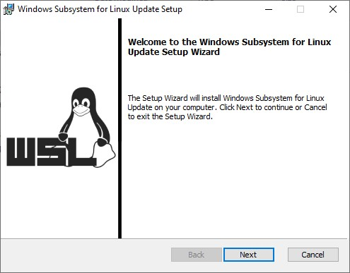
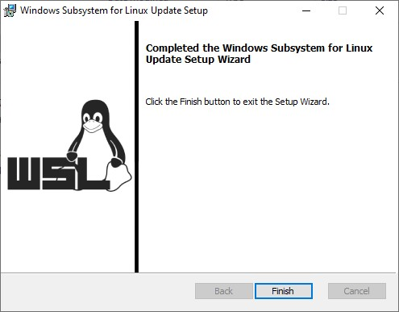
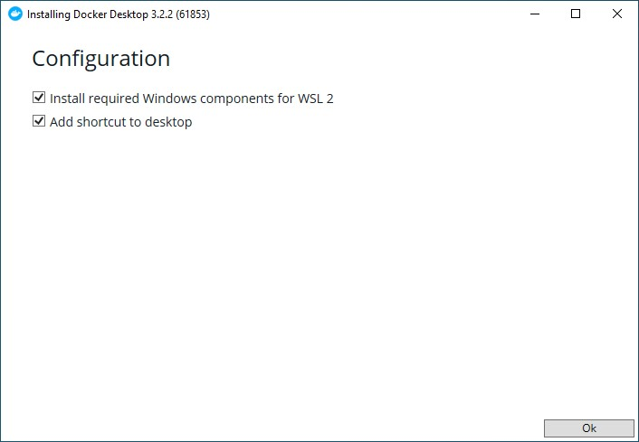
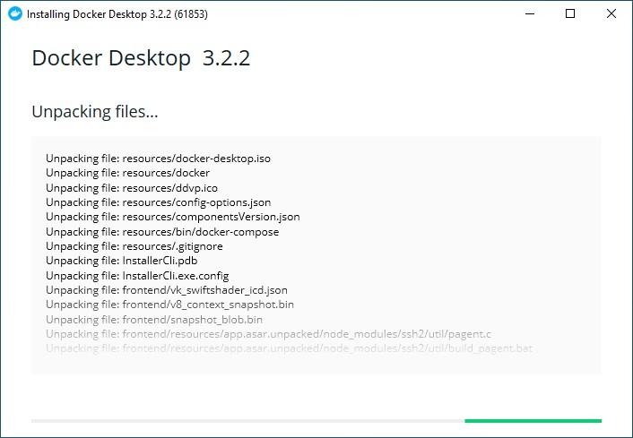
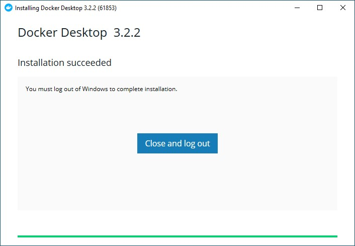
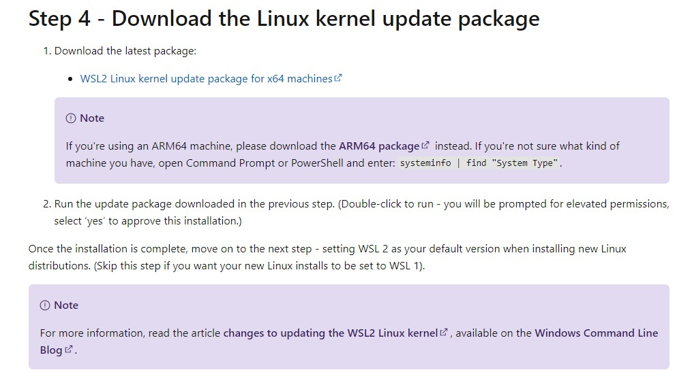
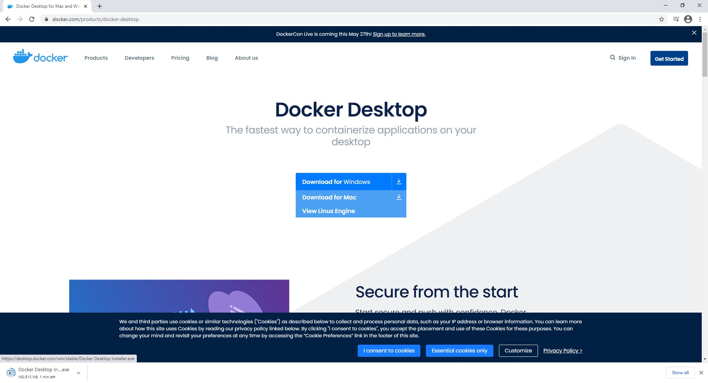

This is document provides instructions on how to install docker and WSL (which is used by Docker).
Note this guide is for Windows devices only. If you have a device with other operating systems we recommend you to find another guide (don't worry, there are plenty out there).
The installation of WSL can be tricky under normal circumstances... but fear not! We've made it simple for you. Just follow these few steps and you're set.
install_1.bat (you can find it in the
same folder as this document)
wsl_update_x64.msi - if it doesn't do this, then follow the
instructions in Extra Steps and download the file manually
wsl_update_x64.msi and press next until finished 
install_2.bat (you can find it in the same folder as
this document)
That's it, you're done. Now it's only one final step left - installing docker.
Docker Desktop Installer.exe - if it doesn't do this, then
follow the instructions in Extra Steps and download the file
manually
Docker Dekstop Installer.exe 

Altough make sure that you or somebody else has filled in all the required
environment (.env.local) variables in both
/server and /app (read about this in the main
folders Readme document)
wsl_update_x64.msi

Docker Desktop Installer.exe

A big thanks to Jeremy Lo Ying Ping who helped us create this guide